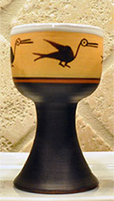

June Special: Peruvian Glasses
We try to feature special items each month and love to promote local foods with an international flavor. This month features Peruvian pisco sour glasses.
These hand-made glasses are made by Peruvian potters and hand painted at an orphanage not far from Cusco. They are the traditional glass that is used to serve pisco sours, the national drink of Peru. Pisco is made from the Quebranta grape in Peru. The bird motif is significant, as one of the translations for the word "Pisco" is "bird." The rich browns, red, and ochre colors are quite attractive in contrast to the white glazed bowl. Pisco is also the name of the port in Peru that is thought to be where pisco was traded as far back as the 17th century.